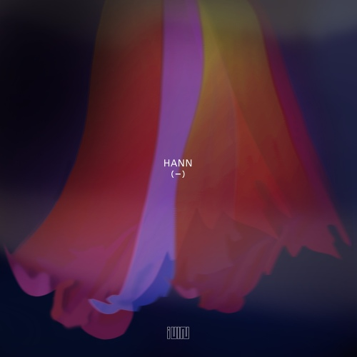
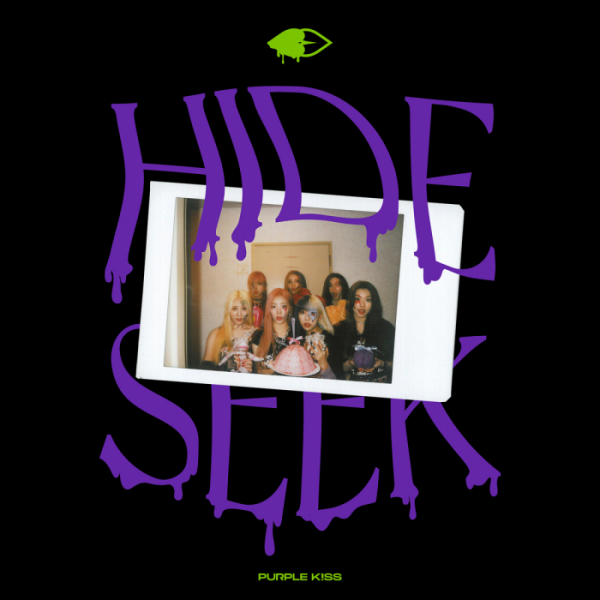

여자 아이들 - 한

제가 몇년 째 자주 듣고 있는 케이팝 노래 중 하나입니다.
휘파람 반주와 하이라이트 부분의 중독성이 좋아서 추천합니다 :)
군대에서 처음 접하고 선후배들이랑 춤췄던 기억이 새록새록 납니다.
태연 - fire
좋아하는 케이팝 가수 중 한명인 태연!!
이 곡은 우연히 태연의 플레이리스트를 듣다가
발견한 곡입니다.
시원한 가창력이 듣기 좋아서 운동할 때 들으면 힘이 넘칩니다.
퍼플키스 - zombie
